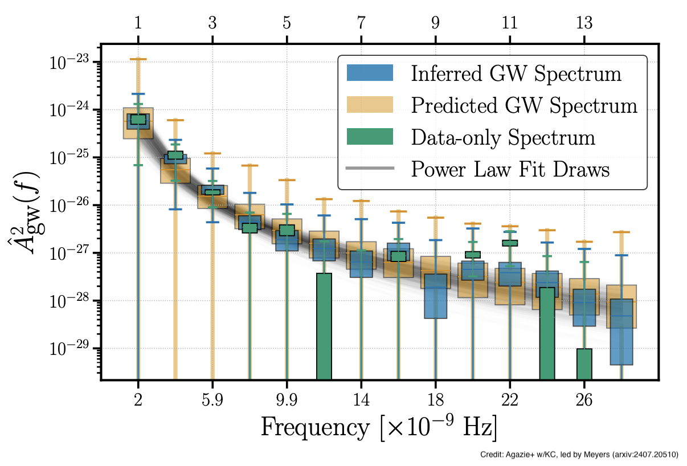

Pulsar timing arrays and NANOGrav

Pulsars are rapidly spinning neutron stars that emit regular radio pulses, like cosmic lighthouses. Among their countless scientific applications, we can use them as clocks scattered throughout our galaxy to detect very low-frequency gravitational waves - specifically waves that oscillate once every few years (nanoHertz frequencies). The main target is a "background hum" of gravitational waves created by pairs of supermassive black holes orbiting each other at the centers of distant galaxies. When these gravitational waves pass through our galaxy, they cause the radio pulses to arrive at Earth slightly earlier or later than expected. These timing changes follow a specific pattern across different pulsars in the sky, described by the "Hellings and Downs curve." By monitoring dozens of pulsars for over a decade, with the NANOGrav collaboration we have now observed this predicted pattern of correlated timing changes - providing evidence of a gravitational-wave background in nanoHertz frequencies.
Unlike LIGO that detects individual gravitational wave "chirps" when two black holes or neutron stars merger, NANOGrav detects a background "hum" made up of thousands of these signals all mixed together. Currently we can only measure two basic properties of this background: how strong it is (amplitude), and how its strength changes with frequency (spectral slope). This makes it challenging to be exactly sure about what its origin is. With former Caltech postdoctoral scholar Pat Meyers, we developed a method to check whether our theoretical models are correct. Our approach uses current models to predict what the data should look like and then compare these predictions to what we actually observe. This method is called "posterior predictive checks."
After successfully testing our method method on simulated, computer-generated data, we applied it to the actual gravitational-wave signal that NANOGrav discovered in real pulsar observations. Using NANOGrav's most recent and comprehensive dataset, Meyers and the collaboration reached two key conclusions. First, the gravitational-wave background follows a simple "power-law" pattern - its strength decreases with frequency to some power. Second, the presence of spatial correlations - the specific pattern of timing changes across pulsars that proves this is actually gravitational waves, was confirmed. This validation gives us confidence that we are correctly interpreting the first detection of the gravitational-wave background, rather than mistaking it for something else.